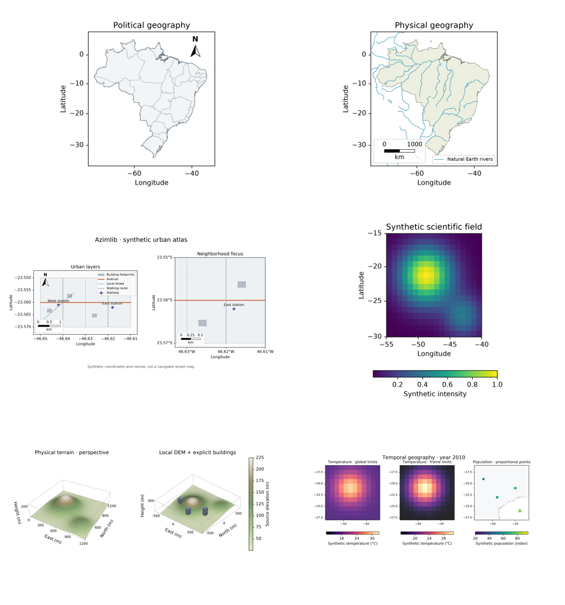

Integrated 0.3 development gallery
All six compositions below are rendered by Azimlib's own implementations from
examples/release_atlas.py. They are unreleased 0.3.0.dev0 examples.
Generation manifest records exact source,
runtime and export hashes. No Matplotlib images/code are used in this gallery.

| View | Output | Data and guide |
|---|---|---|
| Political Brazil | PNG, SVG, PDF | Natural Earth public domain; geodesy |
| Physical/hydrographic Brazil | PNG, SVG, PDF | Natural Earth rivers/lakes/boundaries, not navigation data |
| Synthetic urban atlas | PNG, SVG, PDF | Original synthetic buildings/streets; urban |
| Scientific scalar field | PNG, SVG, PDF | Original formula, CC0 Viridis; scientific 2D |
| Physical terrain/extrusion 3D | PNG, SVG, PDF | Synthetic metric data, own depth raster; 3D |
| Temporal norms/proportional points | PNG, SVG, PDF | Synthetic data, Natural Earth basemap; time |


python examples/release_atlas.py --output .ci-results/gallery030
PNG needs Pillow. All views use bundled DejaVu with its own notice; SVG embeds fonts and PDF attaches their license. 3D SVG/PDF explicitly contain raster terrain, not searchable text or pure vector terrain. Layout/numerical bounds and image tolerances are tested separately from human appearance acceptance. Original compositions are BSD-3-Clause; datasets/fonts/palettes retain their own licenses. Material boundaries.
See also scientific maps, finishing, 3D and temporal/GIF/atlas collections. Older snapshots are identified by their recorded runtime hashes; they are not overwritten.